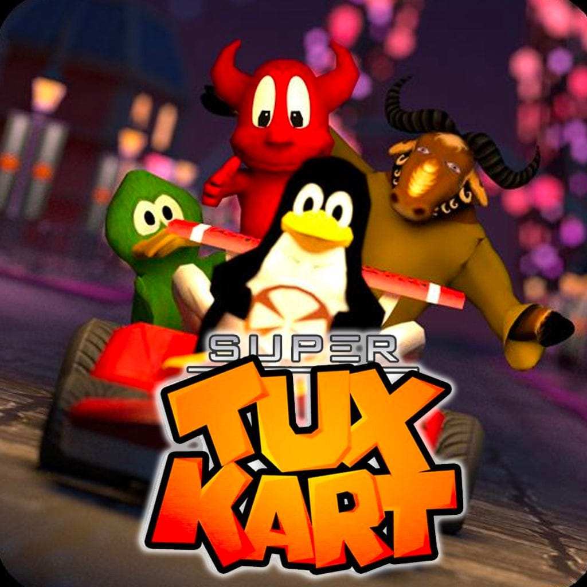

Perjalanan Solo Developer Menggarap "Hollow Realm" Selama 18 Bulan
Berawal dari prototipe kecil saat ikut Game Jam, game aksi-petualangan ini akhirnya tembus pasar global tanpa penerbit besar.
Berawal dari prototipe kecil saat ikut Game Jam, game aksi-petualangan ini akhirnya tembus pasar global tanpa penerbit besar.
Info rilis dan tautan menuju halaman toko resmi pengembangnya.

Ekspansi baru dengan 40 level tambahan dan mode co-op lokal resmi diumumkan.

Game roguelike buatan dua mahasiswa asal Bandung yang ramai dibahas di forum indie.

Pembaruan grafis baru untuk game balap open-source bebas iklan dan mikrotransaksi.
Tulis komentar singkat tentang game indie favoritmu.